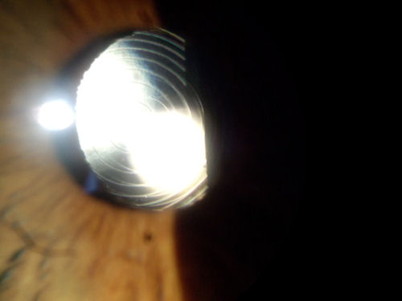

Image courtesy of Dr. Edward Boshnick.
This is a photograph of the eye of a patient who had cataract surgery several years ago. A multifocal lens was used to replace her natural lens. The fine circular lines visible on the implant are indicative of a multifocal lens. The optics of the lens are based on the principal of a diffraction grating. The design is intended to break light rays into two parts -- one to provide distance vision and the other to provide near vision. The lens may provide clear vision either at distance or up close, but seldom at both distances. After implantation of the lens, the patient's vision was not clear. In an attempt to correct this, the surgeon performed LASIK on her eye. In this case, the LASIK surgery created more problems than it solved. The patient's pupils are larger that the optical zone of the implanted lens. In addition, she sees glare, flare and multiple images due to her irregular post-LASIK cornea.
Disclaimer: This information is NOT intended to be used as medical advice. The information contained on this web site is presented for the purpose of warning people about LASIK complications prior to surgery. Persons experiencing vision problems or other eye problems should seek the advice of a physician.